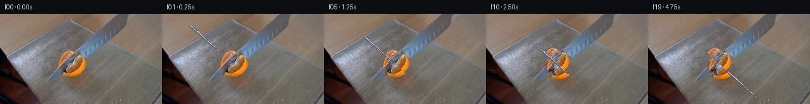

![首帧]()

Round 00
2026-11-05T10:41:45.289172+00:00像素候选变化代码 +307/−0inspection 更新
pixels 10e5e508e1e4a24e · code abd4600ac983a2ab
查看本轮 generate.py 真实 diff
--- previous/generate.py +++ current/generate.py @@ -0,0 +1,307 @@ +#!/usr/bin/env python3 +"""generate.py — Generate 20-frame animation of knife slicing through tangerine. + +Approach: + - Frame 0 = first_frame.png (exact copy) + - Frames 1–19: composite animation using local pixel operations + - Knife: thin metallic diagonal line that moves through the scene + - Tangerine: segmented from frame 0, split into halves that drift apart as knife passes + - Background and glass cutting board remain static + +Method: numpy-based pixel compositing with per-frame knife position interpolation. +""" + +import numpy as np +from PIL import Image +from pathlib import Path +from scipy import ndimage + +# ── Configuration ────────────────────────────────────────────────── +H, W = 144, 256 +N_FRAMES = 20 +CASE_DIR = Path(__file__).parent + +# Knife path: diagonal line from upper-left of tangerine through to below-right +# In frame coordinates (x, y) +KNIFE_START = np.array([85, 55]) # upper-left entry point +KNIFE_END = np.array([148, 112]) # lower-right exit point +KNIFE_DIR = KNIFE_END - KNIFE_START +KNIFE_LEN = np.linalg.norm(KNIFE_DIR) +KNIFE_DIR_UNIT = KNIFE_DIR / KNIFE_LEN + +# Knife blade width (pixels) and appearance +BLADE_WIDTH = 3 +BLADE_COLOR_BRIGHT = np.array([210, 215, 225], dtype=np.uint8) # metallic highlight +BLADE_COLOR_EDGE = np.array([80, 85, 95], dtype=np.uint8) # blade edge shadow +BLADE_COLOR_MID = np.array([160, 168, 180], dtype=np.uint8) # blade body + +# Knife travel: total distance the knife tip moves along its direction +# Blade moves from just above tangerine to well below it +KNIFE_TRAVEL_START = 0.0 # frame 0: tip at KNIFE_START +KNIFE_TRAVEL_END = KNIFE_LEN + 30 # frame 19: tip past tangerine + +# Tangerine split: halves separate as knife passes through +# Split amount peaks when knife is at center of tangerine +MAX_SPLIT = 6 # pixels each half moves laterally + + +def load_frame0(): + """Load first_frame.png as uint8 RGB numpy array.""" + return np.array(Image.open(CASE_DIR / 'first_frame.png')) + + +def build_tangerine_mask(frame0): + """Segment the tangerine from frame 0. + + Returns boolean mask (H, W) where True = tangerine pixel. + """ + r, g, b = frame0[..., 0].astype(int), frame0[..., 1].astype(int), frame0[..., 2].astype(int) + + # Primary orange detection + mask = (r > 120) & (g > 45) & (b < 80) & ((r - b) > 50) + # Include darker flesh + mask2 = (r > 80) & (g > 30) & (b < 60) & ((r - b) > 30) & (g < 140) + mask = mask | mask2 + + # Clean up: fill holes, dilate to capture edge pixels + mask = ndimage.binary_fill_holes(mask) + mask = ndimage.binary_dilation(mask, iterations=2) + + return mask + + +def build_knife_line(tip_pos, length=70): + """Build a mask and color map for the knife blade. + + Args: + tip_pos: (x, y) position of knife tip + length: how far the blade extends backward from tip + + Returns: + blade_mask: (H, W) boolean + blade_rgb: (H, W, 3) uint8 RGB values for blade pixels + """ + blade_mask = np.zeros((H, W), dtype=bool) + blade_rgb = np.zeros((H, W, 3), dtype=np.uint8) + + # Blade extends from tip backward along the knife direction … diff truncated; 220 more lines …